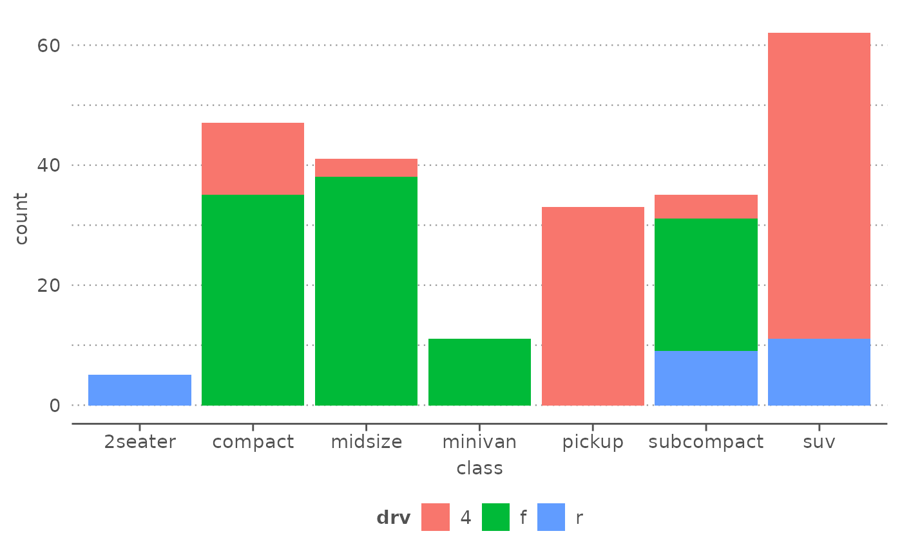
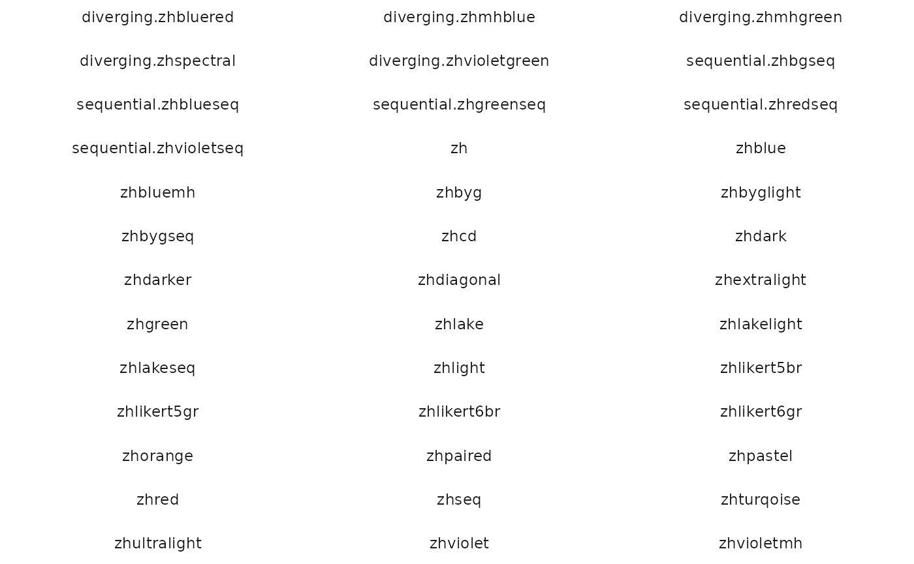

Das statR-package enthält:
- Das Stat ZH Theme (stat_theme()) für ggplot2 Grafiken
- Farbpaletten (zhpal)
- Farbpaletten-Funktionen für ggplot2
- Funktionen um Datensätze aus R in formattierte und Kantons CD-konforme XLSX-files abzuspeichern.
Zu jeder Funktion ist mittels Hilfe-Befehl (?) eine Beschreibung sowie ein Verwendungsbeispiel aufrufbar (z.B.: ?splitXLSX )
Installation
Die Development Version des Package liegt auf github und kann wiefolgt installiert werden.
#Variante 1 library(downloader) download("https://github.com/statistikZH/statR/archive/dev.tar.gz", "statR.tar.gz") install.packages("statR.tar.gz", repos = NULL, type = "source")
#Variante 2 library(devtools) devtools::install_github("statistikZH/statR",ref="dev")
Theme
Das ggplot2-theme ist darauf ausgelegt, sich gut ins kantonalen Corporate Design einzufügen.
#Lade package library(statR) library(ggplot2) ggplot(mpg, aes(class,fill = drv))+ geom_bar()+ theme_stat()

Farben
Das Farbpalettenobjekt zhpal, welches alle StatZH-Farbpaletten enthält, ist mit geladenem statR Package global verfügbar.
#Zeige Farben an display(zhpal$zhdiagonal)

#Mische 20 Farbtöne auf Basis der zhdiagonal-Palette colorRampPalette((zhpal$zhdiagonal),space="Lab")(20) #> [1] "#3F7A9F" "#418AA1" "#4099A3" "#46A79F" "#5AB08D" "#67B97A" "#8AC473" #> [8] "#BAD076" "#E6DB78" "#EFCF7C" "#F2BF80" "#F4B184" "#F3AC92" "#F3A79F" #> [15] "#F1ACB0" "#EBBFC7" "#E2D0DF" "#C7BACE" "#A594AF" "#857091" #Zeige die 20 Farben an display(colorRampPalette((zhpal$zhdiagonal),space="Lab")(20))

#Alle Paletten auf einen Blick display.statcol.all()

#verwende die Paletten für kategoriale Daten mittels 'scale_fill_manual' ggplot(mpg, aes(class,fill = drv))+geom_bar()+theme_stat()+scale_fill_manual(values=zhpal$zhblue)

Formattierte ZH Excel-Tabellen mit R
statR enthält zwei Funktionen welche Daten in formatierte Excel-Dateien abfüllen. Die Funktionen bauen auf dem openxlsx-package auf.
insert_worksheet
Schreibt Daten aus R in eine XLSX-Tabelle mit einem einzelnen Arbeitsblatt.
#erstelle ein neues Workbook wb <- openxlsx::createWorkbook("hello") #schreibe daten in ein neues sheet im bestehenden Workbook insert_worksheet(mtcars[c(1:25),],wb) #speichere workbook als xlsx-Datei ab openxlsx::saveWorkbook(wb, "file.xlsx", overwrite = TRUE)
splitXLSX
Die Funktion splitXLSX erlaubt es einen Datensatz aus R in einer XLSX-Tabelle mit mehreren Arbeitsblättern abzuspeichern und die Daten über mehrere Tabellenblätter zu verteilen.
Beispiel: Speichere die ersten 10 Zeilen des mtcars-Datemsatzes in mehreren Arbeitsblättern ab, ein Blatt pro Kategorie der ‘carb’-Variable. Die Funktion eignet sich für Excel-Files welche pro Jahr oder pro Region etc. jeweils einzelne Arbeitsblätter enthalten sollen.
#Beispiel mit Standardlogo (Logo des Statistischen Amtes ZH) splitXLSX(mtcars[c(1:10),],"mtcars",carb,grouplines=c(1,5,6)) #Beispiel mit modifzierten Bemerkungen und eigenem Logo splitXLSX(head(mtcars),carb, file="filename",grouplines = c(1,2,3), metadata = "remarks: ....",source="canton of zurich",logo="L:/STAT/08_DS/06_Diffusion/Logos_Bilder/LOGOS/STAT_LOGOS/nacht_map.png")
datasetsXLSX (NEU)
Die Funktion datasetsXLSX erlaubt es mehrere Datensätze aus R in einer XLSX-Tabelle mit mehreren Arbeitsblättern zu bündeln.
Beispiel mit zwei Datensätzen:
datasetsXLSX(file="datasetsXLSX2" ,maintitle = "nice datasets" ,datasets = list(head(mtcars),tail(mtcars)) ,sheetnames = c("data1","data2") ,titles = c("Title","Title") ,sources = c("Quelle: STATENT", "Quelle: Strukturerhebung") ,metadata1 = c("Bemerkungen: x", "Bemerkungen: x") ,auftrag_id="AS2020_01" )
Tabellenblätter können auch Bilder oder Plots enthalten.
plot <- plot(mtcars$mpg) datasetsXLSX(file="datasetsXLSX", maintitle = "nice datasets", datasets = list(head(mtcars),tail(mtcars),plot), sheetnames = c("data1","data2","map"), widths = c(0,0,5), heights = c(0,0,2.5), startrows = c(0,0,10), startcols = c(0,0,8), titles = c("Title","Title", "Plot"), sources = c("Quelle: STATENT", "Quelle: Strukturerhebung", "Quelle: Strukturerhebung"), metadata1 = c("Bemerkungen: bla", "Bemerkungen: x", "Bemerkungen: x"), auftrag_id="A2020_0200" )